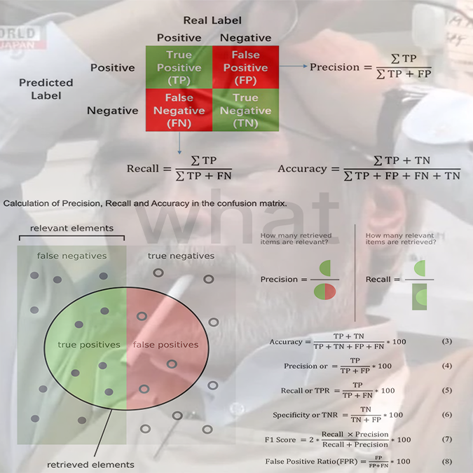
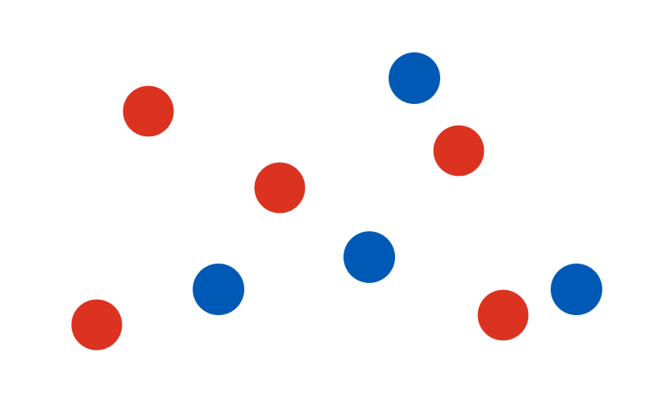
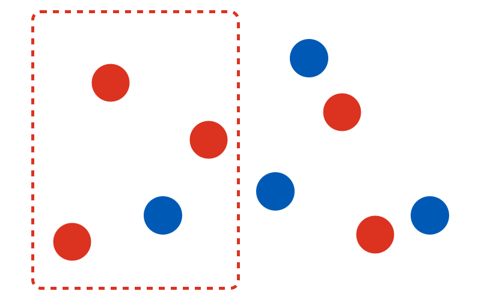
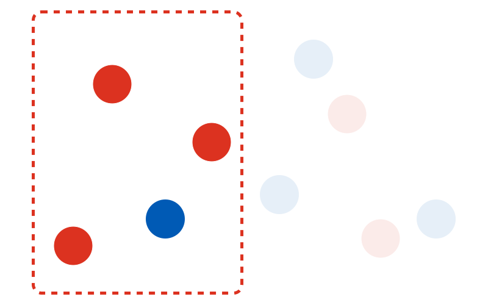
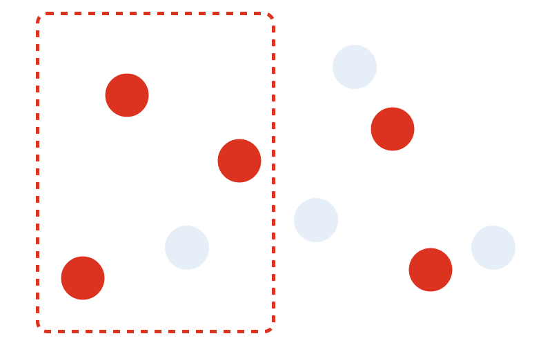
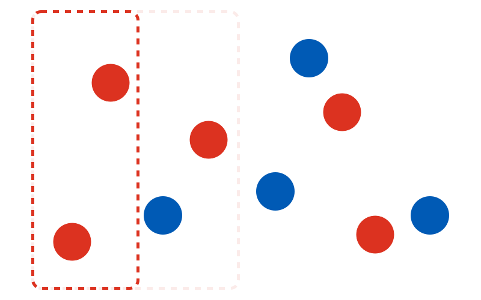
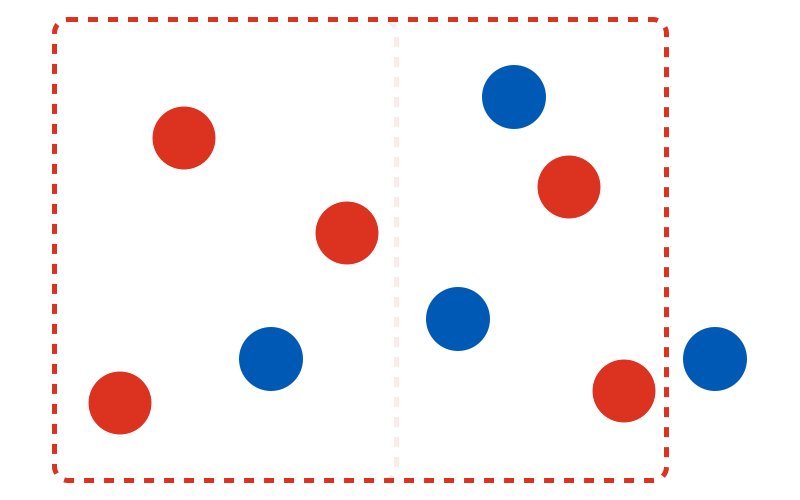
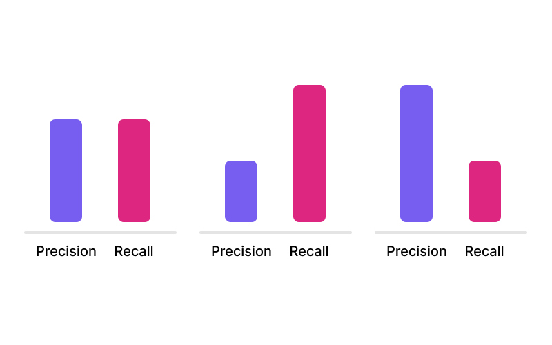
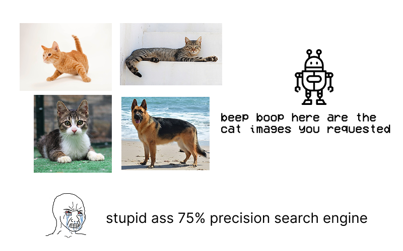

Precision and recall are two important metrics in computer science, but they're pretty general concepts. They just describe how good something/someone is at identifying/retrieving stuff.
They're quite simple, yet every explanation is awful for beginners or non-computer people. You should not have to memorize formulas or read confusion matrices to get the gist.
An easy example
Let's say we have a bunch of red and blue circles.
Our goal is to draw a box that "identifies" all the red circles -- capturing as many red ones as we can, while excluding as many blue ones as possible. Let's give it a try.
So how good is our box at splitting the red circles from the blue?
Let's start with figuring out the precision. Our precision here is the ratio of circles in the box that are actually red. 3 out of 4 circles in our box is red, so our precision is 3/4 = 75%.
Next, let's figure out the recall. Our recall here is the ratio of all the red circles that we managed to get in the box. We managed to get 3 out of a total of 5 red circles in the box, so our recall is 3/5 = 60%.
Now, let's generalize! Precision is "if something is identified as X, what are the chances it's actually X?" and recall is "of all the things that are actually X, how many did we correctly identify?"
In a perfect world, we would be able to draw a box with 100% precision and 100% recall. But realistically, we have to balance the values.
For example, let's say we want to increase our precision to 100%, or get all of the circles in the box to be red. We can do that by shrinking the box.
Our precision is now at 100%, but at what cost? Out of the 5 red circles, only 2 of them are in the box now, meaning our recall dropped from 60% to 40%!
Similarly, we can reach 100% recall by extending the box, but our precision drops from 75% to 62.5% (there are now 8 circles in the box, with 5 of them being red).
This means that precision and recall are inversely related -- improving one value usually means the other has to suffer.
Real world use
Precision and recall are very useful for roasting computer programs.
Since precision and recall are inversely related, we can use them to tweak retrieval algorithms or machine learning models based on the intended goal.
For example, a program like FaceID should prioritize precision -- it's fine if it occasionally doesn't work on our face as long as randos would never be able to unlock our iPhone.
On the other hand, a screening tool for a highly deadly disease should prioritize recall -- a few false alarms is acceptable as long as we catch every possible case.
What about a non-computer scenario? If you bump into someone you know but you're bad at names, you should only say their name if you're very confident you remember what it is (high precision) and not start listing off names like a psychopath (high recall).
That's it! That's precision and recall.